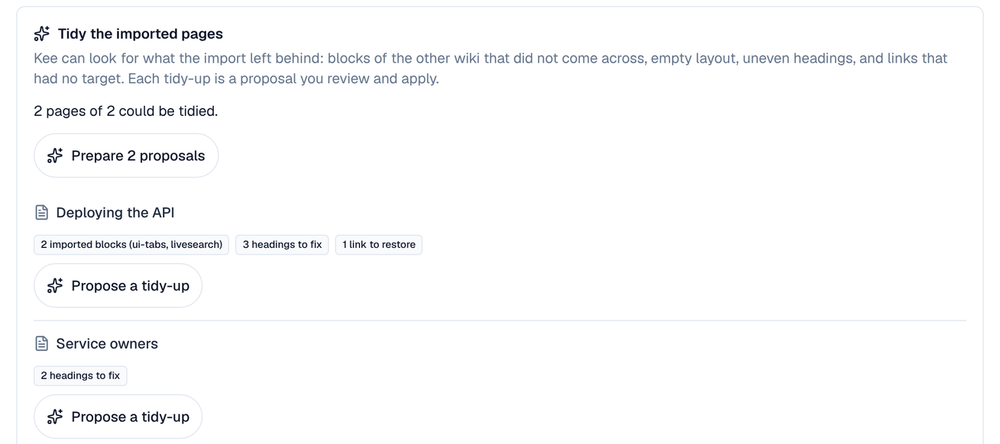
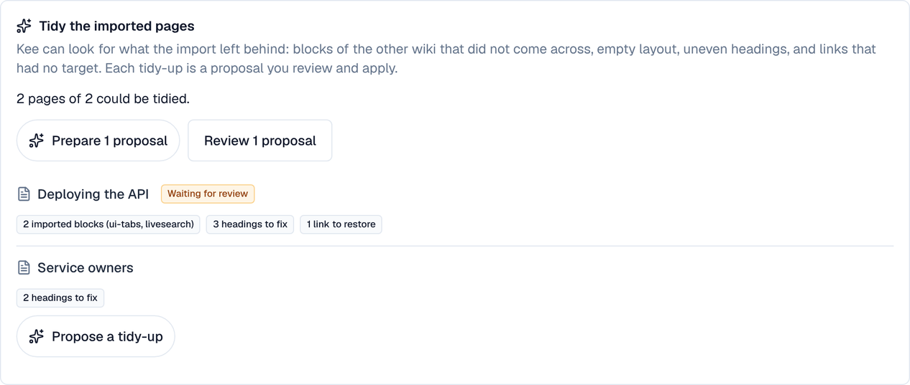
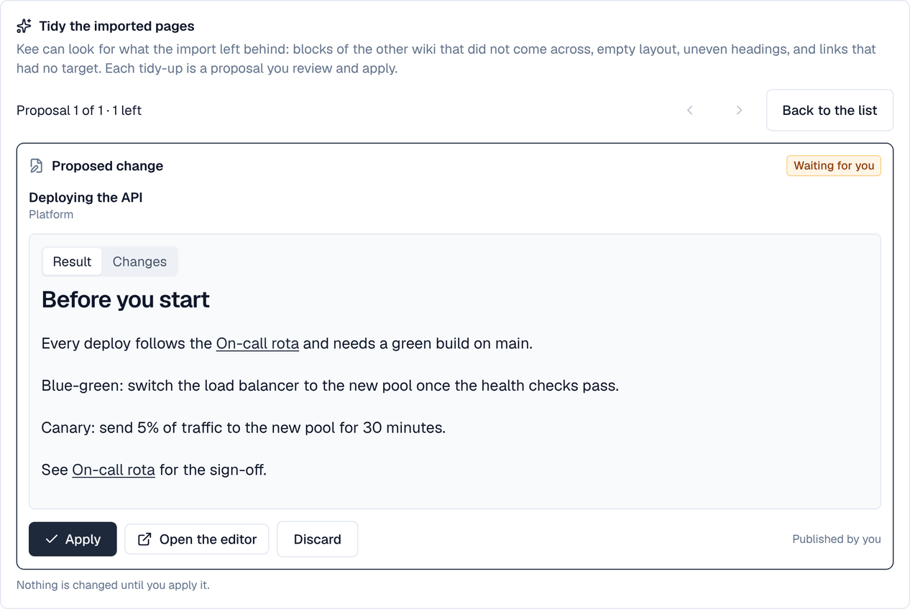

An import from Confluence brings pages across as well as it can, but some things are left behind: blocks of the other wiki that have no match here, empty layout, headings that skip levels, and links to pages that weren't imported yet. Under a finished import, Kee can find those pages and propose a tidied version of each. Nothing changes until you apply a proposal.
You need the permission to import into the space (the space's Import tab) and to edit each page. Kee must be on for you and in the space, and the Import cleanup and Ask Kee features must be on. Only imports run since this feature arrived (2026-11-23) can be tidied: older imports did not keep the list of pages they made. Mirror syncs are not included.
1. What Kee looks for
Finding the pages costs nothing: no text is sent to the model and nothing counts against your limit. Each page shows what was found:
| Shown as | What it means |
|---|---|
| Imported blocks | Confluence macros that were kept as imported blocks, with their names. Kee writes their text into the page in plain Wiki content where it can |
| Layout problems | Runs of empty paragraphs and headings with no words |
| Headings to fix | Top-level headings inside the page, headings that skip a level, and a first heading that repeats the page's title |
| Links to restore | Text that was a link in Confluence whose target was missing at import time, and which now exists and you can read (in the same space, or in a space imported later) |
A page Kee can't tidy for you says why: you can't edit it, it is locked, it has changes that are not published yet, or it is too long.

2. Tidy the pages
- Open the space and select Space settings in its sidebar, then the Import tab.
- Under a finished import, in Tidy the imported pages, select Find pages to tidy. Kee lists the pages it made that could be tidied, with what was found on each.
- Select Prepare N proposals to have Kee prepare a tidy-up for every page, one after another, or Propose a tidy-up under one page. Stop stops preparing after the page in progress.
- Select Review N proposals. Each proposal shows the tidied page (Result) and what changes (Changes).
- Select Apply to publish the tidied page as a new version, Open the editor to change it first, or Discard. The next proposal follows; Back to the list returns to the pages.


3. Good to know
- Applying publishes the page: imported pages are published pages, so the tidied text becomes their next version, under your name, marked as made with Kee. Page history can show or restore the version before.
- A proposal is checked again when you apply it: if someone changed the page since, it shows Out of date and nothing is written. Prepare it again.
- Your proposals are yours: other people who may import see their own list and their own proposals.
- Each prepared proposal counts as one request against your daily limit. Prepare N proposals stops when your limit or the installation's budget is reached, or when the provider is down.
- Kee only tidies: it keeps the page's facts and wording, and doesn't change pages you didn't ask about. Links are restored only to pages you can read.
- A page that has been tidied and applied leaves the list.